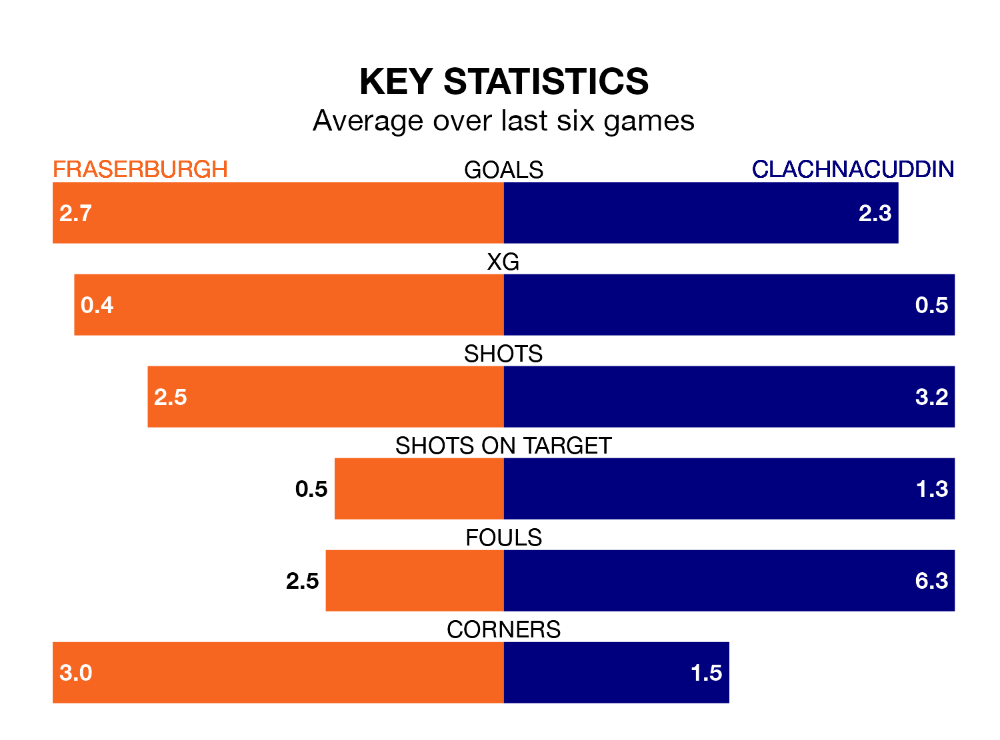

Clachnacuddin travel to Bellslea Park for Saturday's match against Fraserburgh looking to bounce back from defeat last time out in Highland and Lowland Football Leagues.
Clachnacuddin, who sit zero in the league after 20 games, fell to a 5-1 home defeat to Turriff United on January 6.
They face a Fraserburgh side who picked up a win in their last match, a 4-2 victory against Deveronvale, and who sit seventh in the table.
Fraserburgh are in exceptional form in Highland and Lowland Football Leagues, with six wins and no losses from their last six games.
With two wins and a draw over that period, Clachnacuddin's form is much worse – they have taken seven points from 18, compared to the Broch's 18.
With 46 goals in 17 games so far this season, the hosts are scoring more than average in the league with 2.7 goals per game. And they are conceding fewer than average, letting in 22 goals at a rate of 1.3 per game.
The away side, meanwhile, are below average scorers, with 1.4 goals per game, compared to a league average of 1.8. They have conceded 3.0 goals per game.
In the last five years, Fraserburgh and Clachnacuddin have played each other on four occasions. Fraserburgh won three of them and they drew once.
On average, the Broch scored 4.5 goals and Clachnacuddin 0.8 in those matches.
Their last meeting was on September 2, when Fraserburgh won 6-2 away.
Updated: 13:38 (UTC), 10/01/24